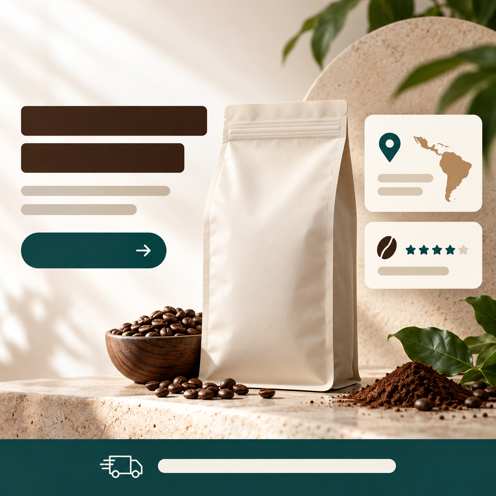

返回課程首頁
(B5)
商品卡 UI 疊加｜落地頁 hero 樣機
電商落地頁、產品詳情頁、訂閱頁的 hero 區視覺。一張圖整合「商品 + 文案 + CTA + 賣點」，並把價格、評分、條款與優惠連回可核對來源。
這張卡片你會學到
能判斷何時用 UI 疊加樣機（與 B1 白底、B2 生活方式、B3 影棚的差異）
能拆解模板的 6 段 prompt 結構並平衡「商品＋UI 元素」的視覺層次
能識別 4 種常見踩雷（排版擁擠／文案不可讀／徽章太多／模特不可信）並修正
(01)
適用場景
這個模板用在哪
三欄結構（左文案 + 中產品 + 右模特或資訊卡）的電商落地頁 hero 區。一張圖把「商品 + 文案 + CTA + 賣點」全部講完。比 B1 白底多了 UI 排版、比 B2 生活方式多了商業資訊層、比 B3 影棚多了真實落地頁感。視覺像「剛上線的精品電商頁面截圖」。
四個典型用途：
- 電商詳情頁主視覺 / SKU 卡 hero（蝦皮、momo 高階商品頁、訂閱頁）
- 品牌訂閱頁落地頁 hero（咖啡訂閱、保養品訂閱、健康食品訂閱）
- FB／LINE 廣告投放主圖（一張圖講清楚產品 + 價格 + CTA）
- EDM／電子報 hero banner（精品週報、會員專屬週末 EDM）
| 對比項 | 本卡片 · B5 UI 疊加樣機 | 近似模板 |
|---|---|---|
| UI 元素 | 必有：CTA 按鈕、賣點卡、徽章 | B1：選用；B2：不疊；B3：常疊文案但無按鈕 |
| 排版 | 三欄（文案＋商品＋資訊卡） | B1：商品居中；B2：商品 + 道具；B3：商品略偏黃金分割 |
| 背景 | 奶白漸變或淺色品牌色（仿真網頁背景） | B1：純白；B2：真實場景；B3：深色絲絨 |
| 商品占比 | 30-40%（留位給 UI） | B1：60% 以上；B3：35-50% |
| 真實感目標 | 看起來像「真實網頁截圖」 | B1：規格清楚；B2：故事感；B3：廣告感 |
| 產出難度 | 高（要管 UI 排版 + 商品 + 文字一致） | B1：最低；B2 / B3：中 |
一句話判斷：客戶問「能放官網嗎」走 B5；問「FB／LINE 廣告投放圖」走 B5；問「訂閱頁主視覺」走 B5；問「整張圖要把產品 + CTA + 評價講清楚」走 B5。報價請依實際需求、授權、修改次數、後製與驗收範圍估算並寫入合約。
(02)
模板拆解｜6 段 prompt 結構
原模板把一張落地頁 hero 拆成 6 段。核心難度在「三欄排版 + UI 元素統一」——AI 容易把每個區塊獨立做、忽略整體版面平衡：
| 段 | 段落 | 必問還是可預設 | 填什麼 |
|---|---|---|---|
| 1 | layout 整體布局 | 必問 | 三欄結構（左文案＋中商品＋右模特/資訊）；比例（16:9 橫式為主、9:16 行動裝置版） |
| 2 | brand 品牌 | 必問 | 品牌名 + 副標（建議全英文避字體覆轍）+ 配色（base/primary/強調色三色） |
| 3 | hero 三欄內容 | 必問 | 左欄：主標 + 副標 + CTA 按鈕（≤ 2 個）；中欄：商品；右欄：模特局部 / 場景 / 資訊卡 |
| 4 | info_overlay 資訊疊加 | 選用 | 賣點卡（≤ 3 個）+ 徽章（≤ 3 個、icon + 短文）+ 評分（5 星 + 訂閱數） |
| 5 | style 樣式 | 可預設 | 乾淨臨床感、商業級渲染、看起來像真實落地頁截圖、色板嚴格按 base/primary/強調色三色 |
| 6 | 限制 | 固定寫死 | 禁忌：排版擁擠、模特表情誇張或假笑、徽章超過 3 個、文案顏色與底圖過於接近、看起來像 PPT |
記憶口訣：布局 → 品牌 → 三欄 → UI → 樣式 → 禁。新手最常漏「色板三色限定」——沒明確寫的話 AI 會給你一個漂亮的 hero 但顏色亂七八糟、UI 元素互相打架。三色鎖（base + primary + 強調色）是 B5 的關鍵紀律。
(03)
台灣化範例 ①｜小工作室視角
小工作室 · 接客戶案
OPEN BEANS 訂閱方案落地頁 · 取代客戶官網舊 hero
- 1 布局｜三欄結構：左文案 + 中 OPEN BEANS 豆袋 + 右資訊卡（兩張：產地與評分）
- 2 品牌｜品牌「OPEN BEANS」、配色深棕主色 + 米白底 + 燙金強調色（三色鎖）
- 3 三欄內容｜左：「Coffee, Reimagined」+「{verified offer}」+「Start Subscription」CTA；中：豆袋；右上：「{verified origin}」、右下：「{verified rating / subscriber count}」
- 4 資訊疊加｜底部細條：「{verified shipping and cancellation terms}」；未取得客戶條款前不填承諾
- 5 樣式｜乾淨精品電商感、看起來像真實落地頁截圖、米白漸變背景
- 6 限制｜禁人物、禁排版擁擠、禁色板出現額外色、禁中英文同等大小（英文為主導）
為什麼這個情境成立：B5 可共用同一份內容層級與品牌規則，再分別設計桌機與行動版。兩種比例仍需各自重排、校稿與驗收；估價時把版型數、修改次數、資料查核和後製工時列清楚。
(04)
台灣化範例 ②｜個人接案視角
個人接案 · 落地頁設計顧問
幫個人健身教練做「線上一對一」訂閱方案登錄頁
- 1 布局｜三欄結構：左文案 + 中健身教練半身照（背影或側臉、不要正臉） + 右訓練數據卡
- 2 品牌｜「IRON COACH」（個人品牌名、英文）、配色：深灰主色 + 純白底 + 螢光黃強調色
- 3 三欄內容｜左：「Train Smart, Not Hard」+「{verified plan and price}」+「Get Started」CTA；中：已取得授權的教練照片或無人物視覺；右上：「{verified service hours}」、右下：「{verified member count / rating}」
- 4 資訊疊加｜底部細條：「{verified trial and cancellation terms}」；無合約或後台證據就保持佔位符
- 5 樣式｜深灰高對比、留白充足、螢光黃只用於 CTA 與關鍵數字；不模仿特定品牌介面
- 6 限制｜禁正臉（保護隱私）、禁排版擁擠、禁螢光黃以外的鮮艷色、禁 PPT 感
接案實務 tip：服務型品牌的落地頁常需要人物、CTA 與信任資訊。人物素材先取得本人與用途同意；評分、會員數、服務時段與方案條款都要向客戶索取可核對來源。沒有證據就保留佔位符。中文版 hero 用 後製疊字流程逐字校稿。
(05)
示範圖｜可複製、可重現
下面是用範例 ① 的 6 段產出的候選圖。實際時間、文字與版面準確度會依帳號、模型與日期不同；左欄 CTA、右欄評分與底部 banner 都必須逐字校稿，評分／訂閱數只能使用可證明的真實資料。下方 prompt 是起點，生成後仍要做人工 QA：

完整 prompt · OPEN BEANS 訂閱落地頁 hero
請生成一張電商落地頁 hero 區商品卡疊加樣機（landing page hero with product card overlay），延續 OPEN BEANS 咖啡品牌系列。視覺要看起來像「真實的品牌訂閱頁面截圖」：
【整體布局】橫式 16:9 構圖，三欄結構：左欄文案 + 中欄產品 + 右欄資訊卡。仿真品牌官網落地頁 hero。
【背景】奶白色漸變主底（左淺右略深米色）、整體乾淨像剛上線的精品電商頁面。
【中欄 · 商品】OPEN BEANS 200g 牛皮紙咖啡豆袋（與 B1/B3/B4 同款），深棕袋身配米白留白標籤；標籤只生成材質、分隔線與文字安全區，不生成可讀品牌、產地或規格。位置畫面正中、占畫面 35%、有自然落地陰影。
【左欄 · 文案區】上下排列：
- 上方保留大字 headline 安全區（無襯線粗體層級、深棕，但不生成可讀文字）
- 下方保留副標安全區（細體層級、淺棕，但不生成可讀文字）
- 兩個無字 CTA 按鈕形狀（深棕填充 + 米白邊框）；正式按鈕文字後製
【右欄 · 資訊卡疊加】上下兩個訊息卡：
- 上方卡片：圓形深棕 icon + 「Roasted in Taipei」+「Within 7 days of order」
- 下方卡片：「{verified rating} / {verified subscriber count}」+「{verified review label}」；所有數字須可回溯
【底部 banner】橫向細條：「{verified shipping and cancellation terms}」（小字、淺棕、英文；無證據維持佔位符）。
【風格】乾淨、精品電商感、商業級渲染像真實落地頁截圖。色板嚴格按照「米白 + 深棕 + 燙金 accent」三色。
【限制】嚴禁人物或人體局部、嚴禁排版擁擠、嚴禁色板出現額外鮮艷色、嚴禁看起來像 PPT、嚴禁中英文同等大小（英文為主導）、嚴禁出現非 OPEN BEANS 的 logo。
四個替換重點（同一份 prompt 改四處就變不同產業落地頁）：
- 【中欄商品】從咖啡豆袋換成你客戶的商品（保養品瓶、3C 配件、健身器材⋯⋯）
- 【左欄文案】主標 + CTA 全換、配你的商業模式（訂閱 / 試用 / 一次購買 / 會員制）
- 【三色板】「米白＋深棕＋燙金」換成你客戶品牌色（科技感→深灰＋藍＋白）
- 【右欄資訊卡】產地 → 換成適合你商品的證明（製造地 / 認證 / 檢驗合格 / 用戶數）
進階：JSON 規劃稿（不可直接當 API request；送出前依官方文件轉成當日參數）
{
"type": "電商落地頁 hero 商品卡疊加樣機",
"goal": "生成一張看起來像真實品牌訂閱頁面截圖的視覺，包含三欄結構（文案＋商品＋資訊卡）+ CTA + 評價",
"brand": {
"name": "OPEN BEANS",
"color_palette": {"base": "奶白漸變", "primary": "深棕", "accent": "燙金"}
},
"layout": {
"format": "16:9 橫式",
"structure": "三欄（左文案 + 中商品 + 右資訊卡）"
},
"hero": {
"left_column": {
"headline": "blank text-safe area; add approved headline in post-production",
"subtext": "blank text-safe area; add verified offer in post-production",
"cta_buttons": [
{"label": "blank; add approved primary CTA in post-production", "style": "深棕填充"},
{"label": "blank; add approved secondary CTA in post-production", "style": "米白邊框"}
]
},
"center_column": {
"product": "OPEN BEANS 200g 牛皮紙咖啡豆袋",
"label_text": "blank label; add approved brand, origin and specification in post-production",
"scale": "占畫面 35%、有自然落地陰影"
},
"right_column": {
"card_1": {"icon": "圓形深棕", "title": "{verified origin}", "subtext": "{verified fulfillment term}"},
"card_2": {"rating": "{verified rating}", "title": "{verified subscriber count}", "subtext": "{verified review label}"}
}
},
"bottom_banner": "{verified shipping and cancellation terms}",
"style": {
"rendering": "乾淨、精品電商感、商業級渲染像真實落地頁截圖",
"consistency": "色板嚴格三色（米白 + 深棕 + 燙金）"
},
"constraints": {
"must_keep": ["三欄結構清晰", "商品為視覺中心", "文案與產品一致", "徽章不能比 logo 大"],
"avoid": ["排版擁擠", "色板出現額外鮮艷色", "看起來像 PPT", "中英文同等大小"]
},
"output": {"aspect_ratio": "16:9"}
}
讀圖時看這 4 個點：(1) 三欄結構是否清楚？(2) CTA 與主標風格是否一致？(3) 資訊卡數字與條款是否有可回溯證據，或仍明確標為佔位符？(4) 色板是否遵守 base + primary + 強調色？四點都通過後，還要做手機版與逐字人工 QA 才能交付。
(06)
改成你的場景
把上面 6 段拿來，只動 3 個替換槽，就變成你自己的 prompt：
| 替換槽 | 你的版本 |
|---|---|
| ⓐ 三色板＝？（base / primary / 強調色） | 例：米白＋深棕＋燙金（咖啡）／純白＋深灰＋螢光黃（運動） |
| ⓑ 左欄文案 = 主標 + 副標 + CTA | 例：先保留文字安全區；後製加入客戶核准的主標、可證明優惠與 CTA |
| ⓒ 右欄資訊卡 × 2 寫什麼？ | 例：可查證的產地資訊 + 已由客戶提供證據的評分／會員數；沒有證據就用佔位符 |
最常見的 4 種踩雷：
- 排版擁擠、訊息打架 三欄塞太多元素（每欄超過 3 個文字塊）AI 會把字疊在一起。解法：左欄最多 4 行（主標 + 副標 + 2 CTA）；右欄最多 2 張卡；底部 banner 1 行。違反就刪減。
- 文案顏色與底圖過於接近 米白底配淺米色文字 = 看不到。解法：deep + light 對比（深棕字配米白底 / 米白字配深棕按鈕）；明確寫「文案顏色與底圖必須有強對比」一條鎖。
- 徽章太多變廣告噪音 寫了「賣點卡」AI 給你 5-6 個徽章疊在一起、看起來像淘寶廣告。解法：明確寫「資訊卡 ≤ 2 張」「徽章 ≤ 3 個」「icon + 短文 only」、並在限制加「徽章不能比 logo 大」。
- UI 文案與 CTA 要人工重建 中英文都可能出現拼字、字形與版面錯誤。B5 的策略：生圖只建立商品與 UI 框架，正式主標、副標、CTA、評分與條款用 後製字體疊圖工作流附錄加入。交付前逐字校稿、核對證據與條款，並以實際測試驗證 CTA 效果。
失敗案例｜prompt 動了哪一處會壞掉：
- 把 layout.structure 從「三欄」改成「四欄」 → 訊息打架、視覺重量分散
- 把 color_palette 加上第 4 種顏色 → 三色鎖被破、整體像 PPT
- 把 cta_buttons 從 2 個加到 4 個 → 客戶不知道按哪個、轉換率掉
- 把 right_column.card_2.rating 寫成「100% 滿意保證」或自行編造具體數字 → 都不可交付；改用客戶可證明的資料，沒有證據就保留佔位符
- 把 主標 改成任何正式中英文文案 → 可能出現拼字、字形或版面錯誤；保留文字區並由可控工具後製
- 把 style.rendering 改成「3D 渲染」 → 失去真實落地頁感、看起來像示意圖
交付提醒 本卡片的 AI 生成的示範圖不是可直接給客戶的最終交付品。中文商業案一律先用 AI 生出構圖（含英文佔位文字）、再走 後製字體疊圖工作流 在 Figma／Canva 疊上中文、最後校稿確認才交付給客戶。
本卡片改寫自 ConardLi／garden-skills 之
product-card-overlay.md 模板（MIT License、2026），已對中文進行台灣用語在地化、加入兩個本地接案情境（OPEN BEANS 訂閱方案落地頁／個人健身教練線上一對一登錄頁）與失敗案例，原始 JSON prompt 結構保留為教學參考。